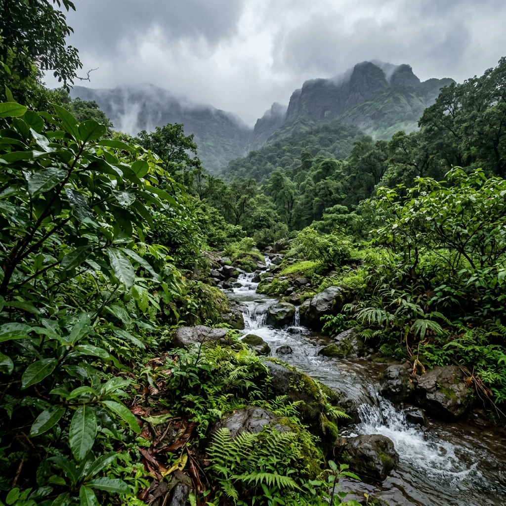
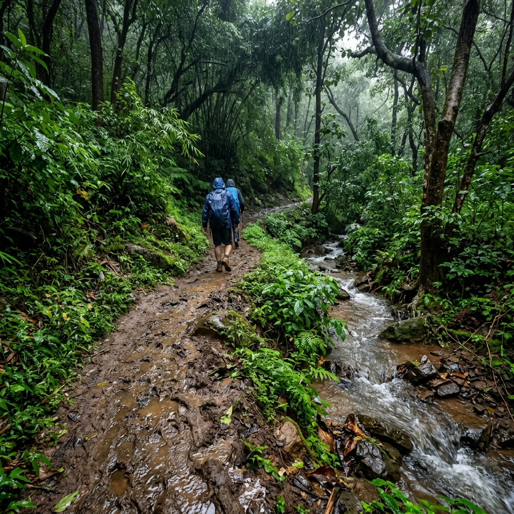
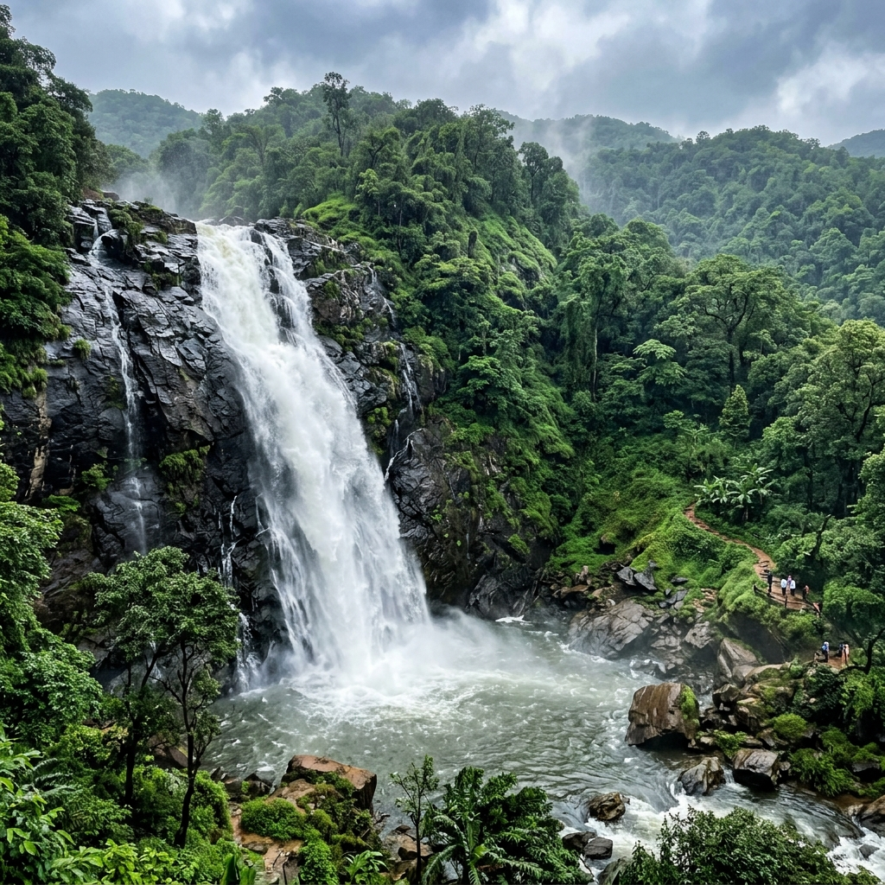
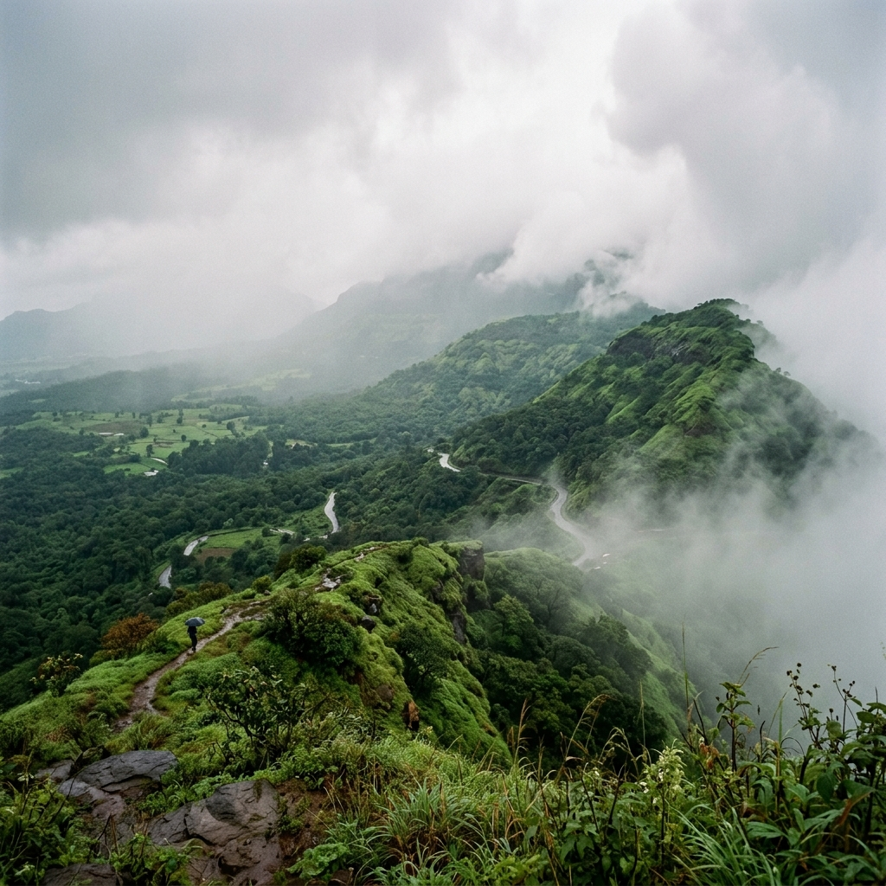

About the Waterfall
Adai Waterfall is one of Panvel's hidden monsoon gems, located near Adai Village in Navi Mumbai. Unlike crowded tourist waterfalls, Adai offers a peaceful natural setting surrounded by green hills, rocky landscapes, and seasonal streams.
During the monsoon, water cascades down the rocky cliffs, creating a beautiful curtain of water that attracts nature lovers, photographers, and weekend travelers. Since it is located close to the city, visitors can enjoy nature without traveling long distances. The area remains relatively less commercialized, which adds to its natural charm.
Region
Panvel, Navi Mumbai
Access
Adai Village

Best Time to Visit
Monsoon season brings the waterfall to life, transforming it into a lush green haven.
Peak Monsoon
Ideal Months: June to September
July and August offer the best water flow. The hills become fully covered in scenic greenery.
Optimal Hours
Best Time: 7:00 AM – 10:00 AM
Morning hours offer the best photography light and have fewer crowds. Plan for a 2 to 3 hour stay.
Off-Peak Seasons
Winter & Summer: Winter keeps some greenery but has reduced water. Summer (March-May) leaves the waterfall dry.
How to Reach
Adai Waterfall is conveniently located close to Navi Mumbai and Thane, making it very accessible.
By Road
Located near Adai Village, Panvel, about 5 km from Panvel Station. Easily motorable. Parking is available near the village, followed by a short walk of around 10-15 minutes to reach the waterfall.
Parking available near villageBy Train
Get down at Panvel Railway Station (well connected to Mumbai, Thane, Navi Mumbai, and Pune). Take an auto-rickshaw or taxi outside the station directly to Adai Village (15-20 mins travel time).
Nearest Station: Panvel StationBy Bus
Regular MSRTC and NMMT buses are available to Panvel Bus Depot. From the depot, hire an auto-rickshaw to Adai Village. Shared autos may be available.
Distance from Major Cities
~20 km
Navi Mumbai
~10 km
Kharghar
~35 km
Thane
~45 km
Mumbai
~115 km
Pune
Trek & Difficulty Level

One of the biggest advantages of Adai Waterfall is that it does not require a difficult trek. Visitors only need to complete a short walk of about 10-15 minutes from the parking or village area to reach the waterfall. The trail passes through greenery, muddy paths, and small streams during the monsoon season.
The walk is generally considered easy and suitable for beginners, families, and first-time trekkers. Children and older adults can also reach the waterfall with basic caution. During heavy rains, however, the trail becomes slippery and extra care is required. Comfortable shoes with good grip are highly recommended.
Grade
Easy Nature Walk
Trail Type
Muddy Path & Stream crossing
Waterfall Experience
The experience at Adai Waterfall is all about enjoying nature in its raw form. As you approach the waterfall, you'll hear the sound of flowing water before you actually see it. During peak monsoon, water rushes down the rocky cliff creating a refreshing mist in the surrounding area.
Visitors often spend time relaxing on the rocks, enjoying the cool breeze, and taking photographs. The surrounding hills become covered in greenery, creating a scenic backdrop for nature lovers. The waterfall also forms small pools and streams around the base, enhancing the overall experience. Unlike some commercial tourist spots, Adai still retains a peaceful and natural atmosphere. Many visitors simply sit near the water and enjoy the monsoon scenery.
Features
Rocky Cliffs & Plunge Pools
Vibe
Peaceful & Less Commercialized

Safety & Swimming Rules
Please practice safety precautions, especially during the heavy rain periods.
General Safety
Rocks near the waterfall can become extremely slippery. Avoid climbing wet rocks for photographs or selfies. Stay alert for sudden rises in water levels.
Swimming Risks
Standing under normal monsoon flow is pleasant, but deep water pockets can form after heavy rainfall. There are no lifeguards stationed at the site.
Water Currents
Jumping from rocks is dangerous. Keep children in shallow base areas and avoid venturing into strong currents during thunderstorms.
Facilities Available
As a natural and relatively untouched spot, the infrastructure is basic.
Parking
Basic vehicle parking is available near the Adai village area. Visitors must walk from there to reach the waterfall (10-15 mins).
Food & Water
Small food stalls and local vendors set up during peak monsoon weekends, but availability is not guaranteed. Carry your own drinking water and snacks.
Connectivity
Mobile network coverage is generally strong due to the waterfall's proximity to Panvel. Washroom facilities are limited or unavailable near the waterfall.
Photography & Viewpoints
Capture the raw beauty of the monsoon in Navi Mumbai.

Nearby Attractions
Make a full-day trip by visiting other spots in the Panvel and Kharghar regions.
Pandavkada Falls
A famous and massive waterfall located in Kharghar, perfect to combine with your Adai trip.
Karnala Sanctuary
Karnala Bird Sanctuary offers beautiful nature trails, birdwatching, and a moderate climb up the fort.
Gadeshwar Dam
A scenic water reservoir nestled among mountains, providing beautiful views and a peaceful atmosphere.
Things to Carry
Ensure you carry all essential items for a comfortable and safe outdoor experience.
Gear & Shoes
Wear waterproof shoes with a good grip. Pack a mobile waterproof pouch and a fully charged power bank.
Clothes & Rainwear
Pack a raincoat or poncho, a lightweight towel, and an extra pair of clothes to change into after the swim.
Health & Food
Carry sufficient drinking water, light dry snacks, a small first-aid kit, and a garbage bag to bring back your waste.
Monsoon Travel Tips
Key recommendations from regular trekkers for a hassle-free visit.
Timings & Weather
Start your trip early. Check weather forecasts before leaving. Avoid visiting during extremely heavy downpours.
Trail Caution
Walk slowly on wet rocks and muddy trails. Do not attempt risky selfies near waterfall edges. Protect electronics from rain.
Vibe & Safety
Travel with friends rather than alone. Respect nature, follow local instructions, wear bright clothes, and do not litter.
One-Day Trip Itinerary
Perfect weekend schedule designed for families, couples, and group travelers.
Suggested Schedule
Crowd Level (Weekday vs Weekend)
Choose your day of visit based on your preferred atmosphere.
Weekdays
Much less crowded, peaceful natural atmosphere. Highly recommended for serene photography, calm relaxation, and easy vehicle parking near the village.
Weekends
High crowds during peak monsoon. More traffic near Panvel and limited parking. Highly popular among local groups, hikers, and bikers.
Location & Coordinates
Adai Village, Panvel Town, Navi Mumbai, Maharashtra, India